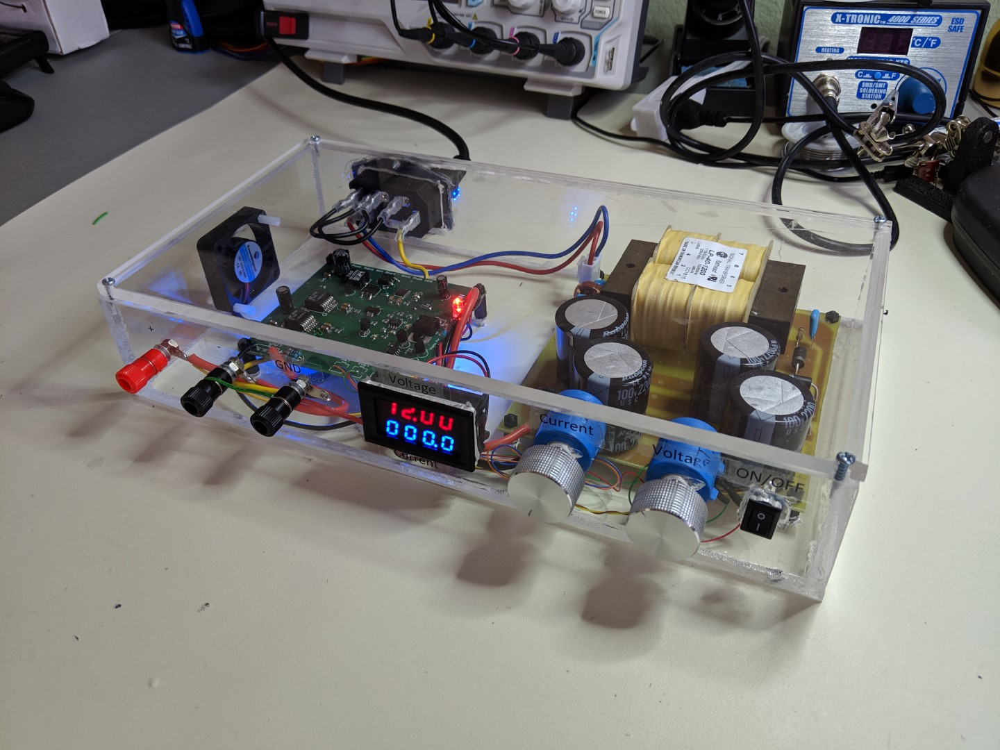

Lab Bench Power Supply
Posted April 2019
|
Overview
I've wanted a bench power supply for a while now, but just never got around to buying one. So instead of spending
$80 on a decent one like a reasonable person, I decided to spend months of my time and a lot more money making one :) A lab power
supply is one that can produce a wide range of voltages and also limit the current that it draws. This is super useful
for prototyping electronics because you might need a wide range of voltages, and if you happen to short something, the current will
still be limited so that you don't damage anything too badly.
This particular power supply can go anywhere from around 0.7V to 27V at 3A and has an adjustable current limit from ~100mA to 3A.
I thought it would be cool to put it in a transparent case, so I custom made the enclosure out of quarter inch acrylic. It also has blue and red LEDs whose
brightness depend on the voltage and current respectively. I had a lot of fun designing this as it's entirely hardware with
no software, and I haven't done anything like it before.
Initial Design After doing a whole bunch of research I based the design pretty heavily on an app note from Analog Devices here. This design uses a kind of two stage approach where a tracking switching regulator drops most of the input voltage, then two fancy linear regulators actually supply the output. The switching regulators output voltage is set to about 2V above the actual output voltage of the supply. This ensures that minimal voltage is dropped across the linear regulators resulting in less heat dissipated and a clean output. The input stage of the supply uses a simple combination of transformer, rectifier, and capacitors to drop the 120V wall voltage to ~30V DC. Here's a block diagram of the initial design.
Schematic The first step was to design the AC to DC conversion board. Below is a snapshot of the schematic for the AC to DC board. The board is pretty simple. It takes in (externally fused) 120V AC voltage from the wall, filters overvoltage conditions with a varistor and filters transient voltage spikes with capacitors. It also blocks high frequency noise on the AC input with a 'choke' inductor. From there a power transformer steps the voltage down to 20V RMS AC. A full bridge rectifier with large output caps converts that AC voltage into about 30V DC (plus/minus a few volts depending on load). One of the major mistakes I made in designing this was forgetting that transformer output voltage is specified in RMS, which results in a much higher peak voltage. I bought a 120V/240V -> 40V transformer (2 20V windings that can connect in series) thinking I could make the max output voltage somewhere slightly above 30V, but a 40V transformer actually outputs 57V when rectified (the peak of the sine wave). The rated voltage is also specified at the highest current draw which takes into account IR losses in the windings. This means that the output could creep up above 60V when lightly loaded which was too high for many of the components I designed into the main supply board. So I had to fly-wire it to just use one of the outputs for 20V RMS which limited my max output voltage to below 30V :( Definitely a learning experience... The next part of the design was the main power supply board which takes the intermediate 30V from the ACDC board and regulates down to the actual output voltage. This is the board that I based heavily on the Analog Devices application note above. Below are the snapshots of the schematic.
There's a lot more going on here, but the main idea is that a TI switching regulator will buck the input voltage down to just barely above the final output voltage, so that 2 linear regulators can produce the final (cleaner) output. There's a feedback loop where the output voltage is set by forcing a constant current across a potentiometer and connecting that to the SET pin of the linear regulators. This output connects to the feedback network of the TI regulator which then sets the TI's output to ~2.2V above the main output. This ensures that there is only minimal voltage dropped across the linear regulators and thus much less power/heat dissipated as waste. I.e. it's much more efficient. While the supply can technically go up to 27V and supply 3A, it can't do both at the same time. It's actually limited by the power rating of the transformer which is 48VA (max 2.4A @20V RMS output). So, I had to add a power protection circuit to prevent too much power from being consumed by the output. The power protection circuit consists of 2 opamps, one configured as a differential amplifier, and another configured as a comparitor. All of the current consumed by the supply travels through a current sense resistor which generates a small voltage across it proportional to the current being drawn. The differential amplifier takes that voltage and amplifies it by a factor of 4. The output of this amplifier is a voltage equal to the current draw in amps (V_diff * 4 * 0.25Ohms). This voltage is compared with a reference voltage of 2.2V (2.2A), and if the current draw is more than that, the comparitor will turn on a BJT transistor that will set the output voltage to 0. Last but not least, the thing has to look cool, so I added some LEDs whos brightness change based on the output voltage and current. The brightness of two blue LEDs changes based on the output voltage, and the brightness of two red LEDs changes based on the output current. With the clear plastic case it ends up looking pretty sweet. PCB(s) Design Next up is the layout of the printed circuit boards. The AC/DC board is only a single sided board because I decided to print it myself. It's pretty big and really simple, so it felt like kind of a waste to pay to have it printed. I still have the equipment and everything from when I printed the alarm clock PCB.
Here are the boards after they've been made. The printing of the AC/DC board didn't go super well, but it ended up working well enough. There's a couple places where the mask got scratched, and etched away which I had to patch with solder. The main board was (obviously) professionally made, and turned out pretty well.
Putting it All Together After the boards were made I could start populating them. I found a few issues during testing of the board. Namely the fact that I had to re-wire the connections to the transformer. I also had an issue with the feedback circuit that sets the voltage of the switching regulator. It was setting the voltage too low and was causing the input voltage to the linear regulators to drop below their dropout voltage under load. I just had to adjust R7 to a slightly higher value to compensate. Other than that it went pretty well! I hit fewer issues than I was expecting for a project of this size really.
Building the Enclosure I've gotten a lot better at CAD since I did the alarm clock project. I've been watching videos trying to learn Fusion 360 instead of sketchup. It seems to be much more fully featured than sketchup although maybe that's just because I took more time to learn it. Anyhoo, I knew I wanted to make the final enclosure out of see-through sheets of acrylic, but I modeled the whole thing in Fusion first to make sure everything would fit nicely. Diptrace (the PCB cad software I used) has a cool feature where you can export a 3d rendering of your board, so I was able to import the board designs into the fusion model. I took a long time making the model detailed mostly just to practice with Fusion.
Building the enclosure was then just a matter of cutting out several sheets of 1/4" plastic, cutting some holes in them, and cementing it all together with some special acrylic adhesive. Sounds simple, but it actually took me forever because I'm not that good with mechanical stuff :)
Finished Product! Here's some pictures of the final thing!
All Design Documents |
 |